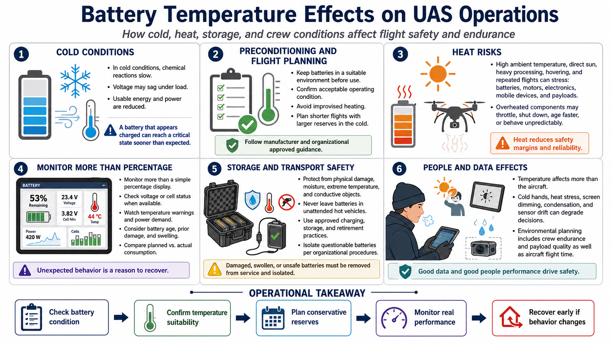

Temperature and Battery Performance
Connecting to LMS... Progress: in progress

Narration
Battery performance changes with temperature. In cold conditions, chemical reactions slow and voltage may sag under load, reducing usable energy and power. A battery that appears charged can reach a critical state sooner than expected.
Follow approved guidance for battery temperature and preconditioning. Keep batteries in a suitable environment before use, confirm they have reached an acceptable operating condition, and avoid improvised heating. Plan shorter flights and larger reserves in the cold.
Heat creates different risks. High ambient temperature, direct sun, heavy processing, hovering, and repeated flights can stress batteries, motors, electronics, mobile devices, and payloads. Overheated components may throttle, shut down, age faster, or behave unpredictably.
Monitor more than a percentage display. Observe voltage or cell status when available, temperature warnings, power demand, battery age, prior damage, swelling, and the difference between planned and actual consumption. Treat unexpected behavior as a reason to recover.
Storage and transport affect safety. Protect batteries from physical damage, moisture, extreme temperature, conductive objects, and unattended hot vehicles. Use approved charging, storage, and retirement practices, and isolate questionable batteries according to organizational procedures.
Temperature also affects people and data. Cold hands, heat stress, screen dimming, condensation, and sensor drift can degrade decisions. Environmental planning includes crew endurance and payload quality as well as aircraft flight time.